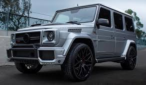

- Phone1: +374 55 90 08 21
- Phone2: +374 77 28 02 71
Mersedes
Mercedes-Benz գերմանական ավտոմեքենայի մակնիշ։ Կազմավորվել է 1926 թվականին։ 2008 թվականին Մերսեդես-Բենցը գնահատվել է 25,6 միլլիարդ դոլար, երրորդ տեղից բարձրանալով երկրորդ տեղ, առաջինում գտնվում է Տոյոտան։1886 թվականին Կառլ Բենցի կողմից ստեղծվեց երեք անիվանի առաջի բենզինային շարժիչով մեքենան։ Յոթ տարի անց ստեղծվեց չորս անիվանի մեքենա Բենցի կողմից։ Դրանից մեկ տարի անց վերջինս ստեղծեց ավելի զարգացած մեքենա։ 1907 թվականին «Դայմլեր»-ը ստեղծում է «Mercedes-35PS» մեքենան, որից հետո ակնհայտ երևում էր թե որքան է վատացել «Բենց» ընկերության առաջադիմությունը։ 1909 թվականին «Բենց» ընկերության կողմից ստեղծվում է այդ ժամանակի ամենահզոր մեքենան՝ «Բլիտցեն Բենցը» 200 ձիաուժ հզորությաբ։ Մինչև «Դայմլեռ» ընկերության հետ միացումը «Բենց» ընկերությունը արտադրել էր 47555 մեքենա։Երկրորդ համաշխարհային պատերազմի ժամանակ «Դայմլեր-Բենց» ընկերությունը արտադրում էր ինչպես բեռնատար այնպեսել սեդան մեքենաներ։ Սակայն երկրորդ համաշխարհային պատերազմի ժամանակ մեծ վնասների ենթարկվեց «Դայմլեր-Բենց» ընկերությունը։ «Դայմլեր-Բենց» ընկերության շարժիչների գործարան 70%-ը ավերվել էր։
Նոր ժամանակաշրջան
1965 թվականին, Ֆրանկֆուրտում առաջին անգամ ցուցադրվեց s մոդելը։ Այնտեղ ցուցադրվեցին 250S մոդելի 150 ձիաուժանոց և 250SE մոդելի 170 ձիաուժանոց ավտոմեքենաները։ Այդ թվականից այդ ավտոմեքենաները համալրվեցին 2,8 լանոց, իսկ 1968 թվականից V8 տեսակի 3,5 և 4,5 լիտրանոց շարժիչներով։ Այս մոդելի ամենահզոր և ամենահրմարավետ ավտոմեքենան դարձավ 300SEL մեդելի ավտոմեքենան, և 300SEL մոդելի 6,3 լիտրանոց ծարժիչներով, 220 կմ/ժ մաքսիմալ արագություն զարգացնող ավտոմեքենաները։Եվ հենց այդ ժամանակիցներից Մերսեդես Բենց ընկերության s մոդելի ավտոմեքենաները դարձան ամենատեխնիկապես զարգացած ավտոմքենաները։ 1968 թվականից հայտնվեցին W114 և W115 դասերի նոր մոդելները, որոնք տարբերվում էին շարժիչի հզորությամբ։ Մեծ համբավ վաելեցին դիզելային շարժիչով այս մեքենաները։ Այս ավտոմեքենաները թողարկվվում էին նաև ունիվերսալ և կուպե թափքերով։

2002 թվականի մայիսին տեղի ունեցավ նոր CLK-դասի W209-ի պրեմիերան։ Ինչպես այս ավտոեքենաի նախորդի, այնպես էլ այս ավտոմեքենայի կուզովը հիմնված էր C-դասի W203-ի վրա։Եթե W208 ներկայացնում էր իր հատուկ CLK-GTR սերիան, ապա W209 ը ուներ երկուսը։ AMG-ին 2003 թվականին թողարկեց հատուկ սերիա CLK-DTM-ից։ 2007 թվականին հայտնվեց սև սերիա CLK63 AMG-ին։2000 ական թվականին Մերսեդեսը թողարկեց մոտ 10 նոր մոդելներ։ 2004 թվականին հայտնվեց նոր A-դասի W169-ը։Միևնույն ժամանակ Mercedes-Benz-ը թողարկում էր ավտոմեքենաներ։
Ընկեությունը ստեղծում Է նոր դասեր։ Առաջինը B-դասի T245-ը, երկրորդը R-դասի W251-ը։ Վերջինը հիմնված էր Е-դասի W211 կուպեի բազայի վրա։2007 թվականին կայանում է նոր C դասի W204-ի պրեմիերան Classic, Elegance տեսակները տարբերվում էին ավելի գեղեցիկ սրահով Avantgarde-ից, որը կարելի է հեշտությամբ տարբերել ընկերության լոգոյով մյուս տեսակներից, որը տեղակայված է ռադյատորի քողարկիչի կենտրոնում։2000-ական թվականներին ընկերությունը ստեղծում է նոր 2 ամենագնացների դասեր։ Առաջին մոդելը GL-դասի(X164) ավտոմեքենան էր։ 2008 թվականին հայտնվեց երկրորդ ամենագնացը GLK-դասի(X204)։ 2000 թվականին Daimler-ը գնեց անգլիական McLaren ընկերության 40%-ը, հայտնվեց եզակի հնարավորություն։ Նոր ավտոմեքենայի համար ընկերությունները սկսեցին միասն ստեղծել հզոր շարժիչն 617 ձիաուժանոց v8 տեսակի։ Արդեն 2004 թվականին պատրաստ էր Mercedes-Benz SLR McLaren-ը։ Մերսեդեսը վերջացրեց Е-դասի W212 ի արտադրությունը 2009 թվականի սկզբին։ Այդ թվականի օգոստոսին հայտնվեց S212։ Նոր Е-դասի ընտանիքը հասավ մեծ հաջողությունների հարմարավետության շնորհիվ։
Mercedes-Benz G-դաս, այս մոդելի պատմությունը սկիզբ է առնում 1979 թվականից։ Տարիներ շարունակ այն իր հստակ դիրքն է զբաղեցնում համաշխարհային ավտոշուկայում՝ լայն տարածում գտնելով ինչպես խիստ արտաճանապարհային պայմաններում, այնպես էլ առօրյան հարմարավետ վարման ապահովման համար։ Իր տեխնիկական պարամետրերը և անցողունակության կատարյալ հատկանիշները չունեն մրցակիցն ու նմանակը։ G-դասի լիաքարշակ համակարգը ապահովում է ընթացքի կայունությունը ցանկացած ճանապարհային պայմաններում։ Դիֆերենցիալի արգելափակման շնորհիվ նույնիսկ մեկ անիվի վրա ընկնող քարշիչ ուժը բավական է ավտոմեքենան բարդ իրավիճակից հանելու և երթևեկությունը շարունակելու համար։
G-դաս ավտոմեքենայի արտաքին դիզայնը գրեթե չի փոփոխվել տասնամյակներ շարունակ։ Ավտոմեքենան ստեղծված է լինելու ամուր ամենագնաց։ Հստակ գծեր ու հարթ մակերեսներ՝ սրանք են ավտոմեքենայի դիզայնի հիմնական բնութագրերը։ G-դասում բարձր նստելատեղերը համակցված են ցածր պատուհաններով, ինչն ապահովում է գերազանց տեսադաշտ։ Գործիքների վահանակը շատ պարզ է և ֆունկցիոնալ, ինչը թույլ է տալիս հարմարավետ կերպով գործարկել ավտոմեքենայի բոլոր ֆունկցիաները։ Բազային Ambient lighting լուսավորության համակարգն ապահովում է հաճելի մթնոլորտ ինտերիերում։
| Մոդել | Շարժիչի գլանների քանակը և դասավորությունը | Շարժիչի ծավալը (խսմ) | Շարժիչի հզորությունը (ԿՎտ) | Առավելագույն արագությունը (կմ/ժ) | Վառելիքի կոմբինացված ծախսը (լ/100 կմ) | CO2 կոմբինացված արտանետումները (գ/կմ) |
|---|---|---|---|---|---|---|
| G 500 | V8 | 5461 | 285/6000 | 210 | 14.9 | 348 |
| G 63 AMG | V8 | 5461 | 400/5500 | 210 | 13.8 | 322 |
| G 65 AMG | V12 | 5980 | 450/4300–5600 | 230 | 17.0 | 397 |